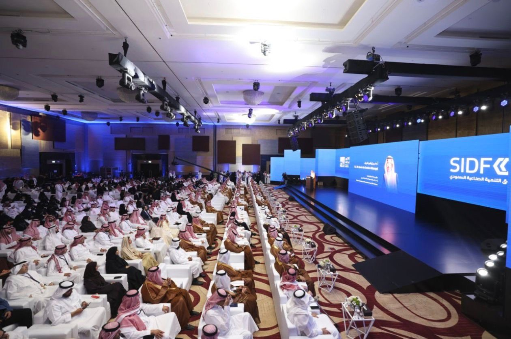
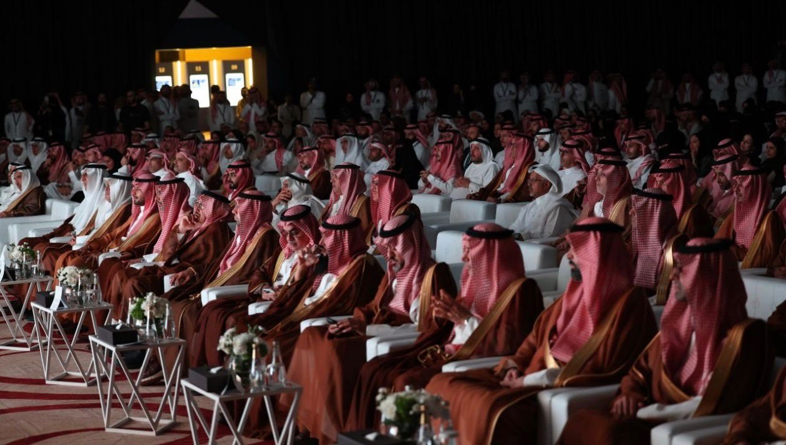
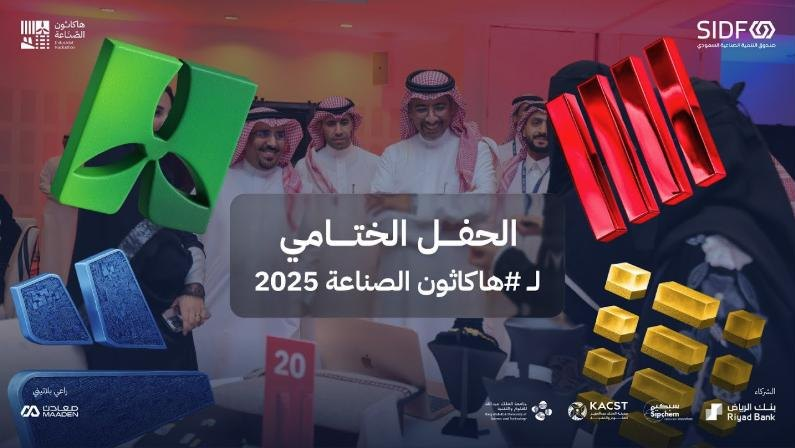
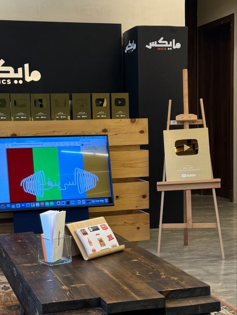
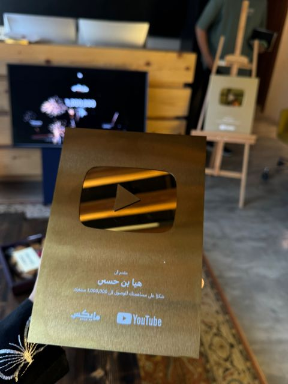
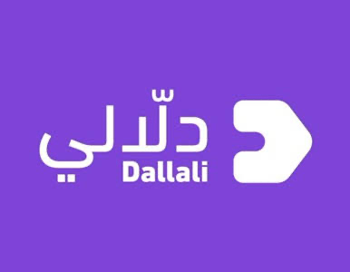
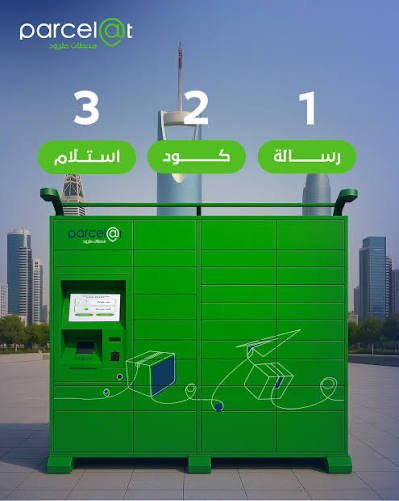

9,000 +
هاكاثون الصناعة 2025
فعالية وطنية مع صندوق التنمية الصناعية السعودي، جمعت فيها بين حوكمة تضبط الإيقاع وسرد قصصي منح الهاكاثون صوته.
أقف حيث تلتقي الفكرة بالتنفيذ؛ أصوغ الاستراتيجية، وأقود المشروع، وأروي حكايته. أرافق الوزارات ومكاتب تحقيق الرؤية والقطاع الخاص من أول سؤال حتى آخر تقرير.
أصيغُ للمفاهيمِ جوهراً أصيلاً، لتغدو الرؤى واقعاً مشهوداً



فعالية وطنية مع صندوق التنمية الصناعية السعودي، جمعت فيها بين حوكمة تضبط الإيقاع وسرد قصصي منح الهاكاثون صوته.


لحظة تكريم بعد إدارة مشاريع بودكاست من الفكرة إلى الحلقة، حتى وصلت القناة إلى مليون مشترك.
نحن لا نرث الأسماء فحسب، بل نرث الطرق الاستراتيجية التي مُهّدت لنا بصبر لنمشي عليها ونطوّرها. شغفي يمتد من عمق هويتنا وجذورنا الأصيلة، إلى آفاق التحديث والحوكمة الإدارية.
أعمل على سدّ الفجوة بين الفكرة الطموحة والواقع التنفيذي، من خلال قيادة وتطوير محتوى وتجارب بصرية وتفاعلية تروي حكاية الإنجاز والمشاريع الكبرى بنبرة صادقة وثابتة.
أؤمن أن المحتوى الحقيقي لا يكتفي بالظهور، بل يخلق معنى، ويترك أثرًا، ويعيد تشكيل العلاقة بين الفكرة والجمهور.
أعمال أخرى: المعايير المهنية الوطنية وبرامج تنمية القدرات البشرية · تموضع العلامات التجارية مع مراكيز لدلّالي وParcel@t · العروض الفنية ووثائق المناقصات · مستودعات بحثية مبنية بالذكاء الاصطناعي

